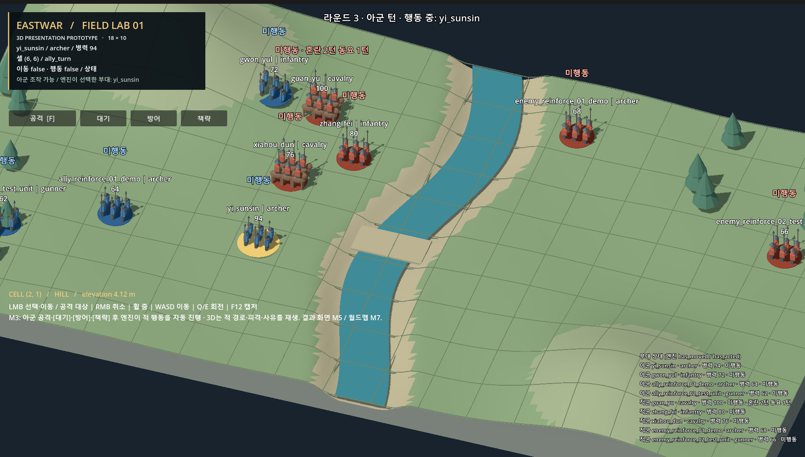

EASTWAR 개발일지 #048
[3D 전환 시리즈] 이제 책략을 쓰고, 증원을 기다린다
2026년 10월 22일 · 10월 21일 밤~22일 아침 작업 기록아침에 일어나 밤사이 진행된 작업부터 확인했다. 자기 전에 AI에게 맡겨둔 것은 두 가지였다. 3D 전투 화면에서 책략을 사용할 수 있게 하는 것, 그리고 전투 도중 도착하는 증원 부대를 화면에 보여주는 것.
두 작업의 결과를 검토하고 하나로 합친 뒤, 고도 엔진에서 직접 실행해봤다. 전투 화면에는 ‘책략’ 버튼이 생겼고, 정해진 라운드가 되자 증원 부대가 나타났다. 밤에 지시문으로 적어둔 내용이 아침에는 직접 눌러볼 수 있는 기능이 되어 있었다.
지난 개발일지에서는 이동과 공격, 대기를 거쳐 적의 차례까지 이어지는 한 라운드를 만들었다. 이번에는 그 흐름 안에서 할 수 있는 일을 조금 더 늘렸다.
책략 버튼을 누르고 대상을 고르면 성공할 확률이 먼저 보인다. 실행하면 성공했는지, 상대에게 어떤 상태가 걸렸는지를 확인할 수 있다. 병력을 움직여 공격하는 것에 더해, 상대를 혼란에 빠뜨리는 선택도 3D 화면에서 할 수 있게 된 셈이다.
기술적으로는 전투의 판단과 화면의 표현을 나눠 작업하고 있다. 플레이어가 3D 화면에서 책략과 대상을 선택하면 기존 전투 엔진이 결과를 계산하고, 화면은 엔진이 남긴 기록을 받아 성공 여부와 상태 변화를 보여준다. 성공률을 미리 보여줄 때도 같은 엔진의 계산을 사용한다. 화면이 달라졌다고 전투 규칙까지 두 벌로 만들어 관리하지 않으려는 방식이다.
이를 위해 앞선 작업에서 엔진이 책략과 증원, 화상 같은 상태 변화를 기록으로 남기도록 했다. 기록을 추가하면서 기존 전투 결과까지 바뀌지는 않았는지도 확인했다. 이전 엔진과 수정한 엔진에 같은 난수 조건을 주고, 여섯 판에서 각각 열 번의 행동을 실행해 비교했다. 무작위 결과가 나오는 조건까지 맞춘 상태에서 차이가 없는지 확인한 것이다.
증원도 단순히 부대를 하나 더 띄우는 작업으로 끝나지는 않았다. 아직 도착하지 않은 부대는 보이지 않아야 하고, 그 자리를 눌러도 선택되지 않아야 한다. 적이 마지막 행동을 하는 중간에 갑자기 등장해서도 안 된다. 이번 테스트에서는 2라운드와 3라운드에 증원이 들어오도록 하고, 앞선 행동이 화면에서 끝난 뒤 나타나게 순서를 맞췄다.

기능 하나가 추가될 때마다 이런 작은 조건들이 따라온다. 버튼이 생기거나 부대가 나타나는 모습은 금방 확인할 수 있지만, 다른 행동과 섞였을 때도 자연스럽게 이어지는지는 따로 살펴봐야 한다.
이번 작업에서는 AI에게 밤새 일을 맡기는 방식도 정리해봤다. 중간에 질문을 하고 답을 기다리면, 내가 자는 동안 작업도 그대로 멈춘다. 그래서 시작하기 전에 어디까지 해도 되는지, 애매한 부분은 어떤 기준으로 판단할지, 어떤 상황에서는 멈춰야 하는지를 적어뒀다.
예를 들어 전투 엔진을 고쳐야 하거나 허용한 범위를 벗어나야 한다면 억지로 진행하지 않도록 했다. 같은 실패가 반복돼도 마찬가지다. 그 단계가 막힌 이유를 남기고 다음 작업으로 넘어가게 했다. 두 작업도 각각 같은 출발점에서 시작하게 해서, 한쪽의 문제가 다른 쪽에 영향을 주지 않도록 했다.
아침에 보니 두 작업은 모두 끝나 있었다. 증원 작업에서는 기존 검사를 통과하지 못한 부분을 스스로 다시 고친 기록도 있었다. 검사 기준을 느슨하게 바꾼 것이 아니라, 구현을 기존 원칙에 맞춰 수정했다는 점을 확인했다.
물론 완료 보고를 받았다고 바로 끝내지는 않았다. 두 결과를 합치는 과정에서는 같은 부분을 수정한 탓에 충돌이 생겼고, 이를 정리한 뒤 전체 검사를 다시 돌렸다.
검증에서는 같은 책략을 두 경로로 실행해봤다. 하나는 플레이어처럼 3D 화면의 입력을 거치는 방식이고, 다른 하나는 전투 엔진을 직접 호출하는 방식이다. 24가지 무작위 상황에서 부대 상태와 기록뿐 아니라 성공률 미리보기, 화면에 표시되는 문구까지 비교했고 차이는 없었다. 엔진의 결과가 화면으로 전달되는 과정에서 어긋나는 부분이 없는지를 확인하는 검사다.
두 작업을 합친 뒤에는 검증 스크립트 39개와 Godot 테스트 95개를 돌렸고 모두 통과했다. 여기에 일부러 코드를 잘못 바꿔보는 검사도 더했다. 정상 코드가 통과하는 것뿐 아니라, 잘못된 코드가 들어왔을 때 검사에서 실제로 잡아내는지도 확인하기 위해서다.
대부분의 오류는 잡혔지만 놓친 부분도 있었다. 그중 하나는 부대 머리 위에 뜨는 화상 피해 숫자였다. 기록에 남는 숫자는 확인하고 있었지만, 화면에 떠오르는 숫자까지 검사하지는 않았던 것이다. 이 부분은 다음 작업의 검사 항목에 넣었다.
이번에 책략과 증원을 3D 화면에 연결하면서 전투 엔진의 코드는 건드리지 않았다. 앞서 엔진에 필요한 기록을 남기는 작업을 해뒀고, 이번에는 그 기록을 화면으로 옮기는 데 집중했다.
아직 전투 한 판이 완성된 것은 아니다. 다음으로는 장수의 고유특기를 직접 사용하는 기능과 적의 특기가 화면에서 재생되는 부분을 연결해야 한다. 한 판을 끝까지 시험할 시나리오도 정하고, 화면의 글자 크기나 클릭 처리도 다듬어야 한다.
그래도 이제 3D 전장에서는 부대를 움직이고 공격하는 데서 한 걸음 더 나아갔다. 책략을 고르고, 결과를 확인하고, 뒤늦게 합류하는 증원을 맞이할 수 있다. 다음 테스트에서는 이 선택들이 한 전투 안에서 어떻게 이어지는지 살펴볼 생각이다.